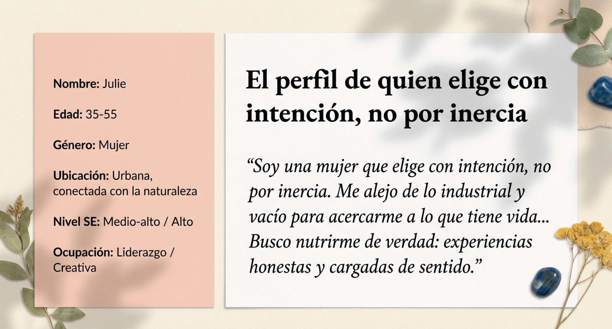
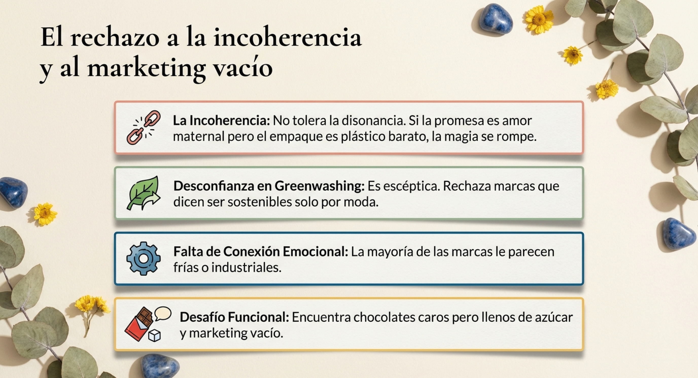
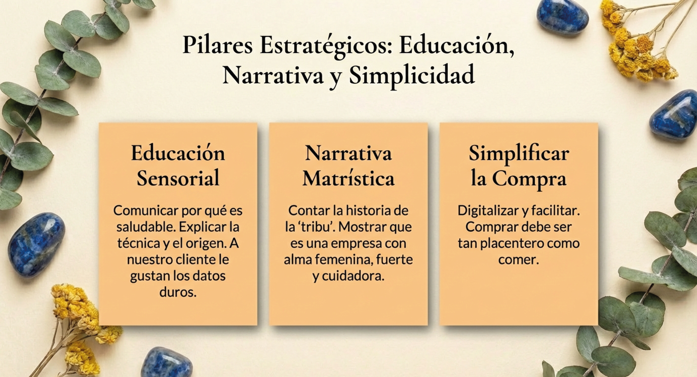
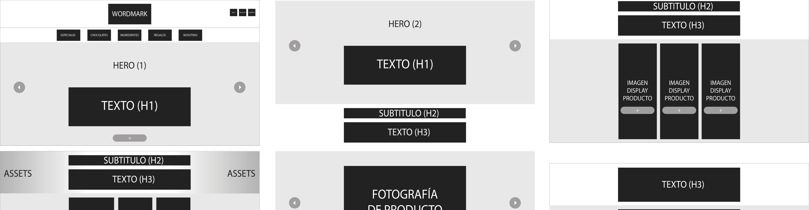

Casos de diseño.
Dinkenesh Chocolatería
Rediseño end-to-end de tienda online — investigación, UX/UI e implementación
El problema
Dinkenesh Chocolatería operaba con una tienda online que no convertía. La imagen de marca no comunicaba la calidad del producto y la experiencia de compra generaba fricción innecesaria.
Proceso
Benchmark de competidores reveló oportunidades en arquitectura de menú y estándares de fotografía de producto. El User Persona definió el perfil de comprador tipo e informó las decisiones de navegación.
Mi rol
En colaboración con mi socio, diseñador gráfico, en dirección de arte y fotografía.





Desinfec
Diseño y desarrollo completo de landing orientada a conversión — metodología AIDA
El problema
Desinfec, empresa de desinfección y sanitización comercial en la zona de Osorno, necesitaba presencia digital que transmitiera confianza, informara sus certificaciones y convirtiera visitas en clientes.
Proceso
La arquitectura se estructuró bajo metodología AIDA: captar atención con propuesta de valor clara, generar interés con proceso y certificaciones, provocar deseo con casos de uso, y dirigir a acción con formulario de contacto.
Mi rol
Bariatrica Antofagasta
Sitio informativo con sistema de captación de leads automatizado mediante calculadora IMC custom
El problema
Especialista en cirugía bariátrica necesitaba presencia digital que informara sus servicios y generara leads calificados de forma automatizada, sin intervención manual.
Solución destacada
Calculadora de IMC con código custom que evalúa al usuario y envía automáticamente los resultados por correo, convirtiendo una visita informativa en un lead calificado.